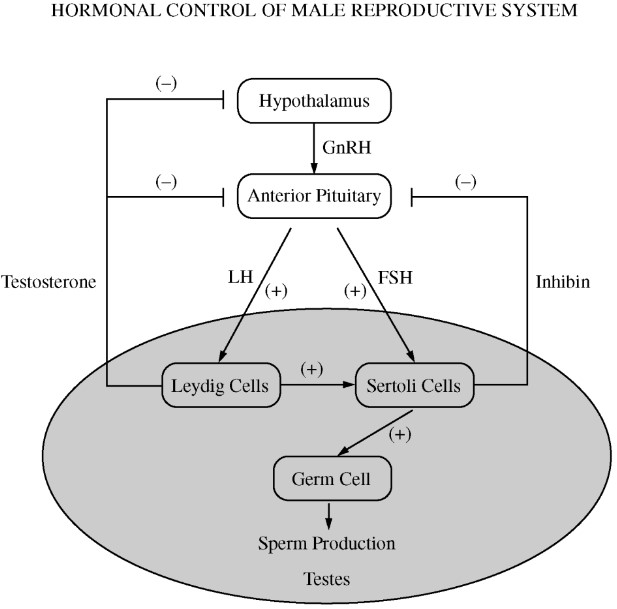

Precise regulation of specific hormone levels is required for optimal sperm production in mammals, as summarized in the figure above. Anabolic-androgenic steroids (AAS) are synthetic variants of testosterone that are sometimes abused by persons who desire to enhance their athletic performance or alter their physique. Assuming that AAS function in the same way as naturally occurring testosterone, it is most likely that long-term abuse of AAS would